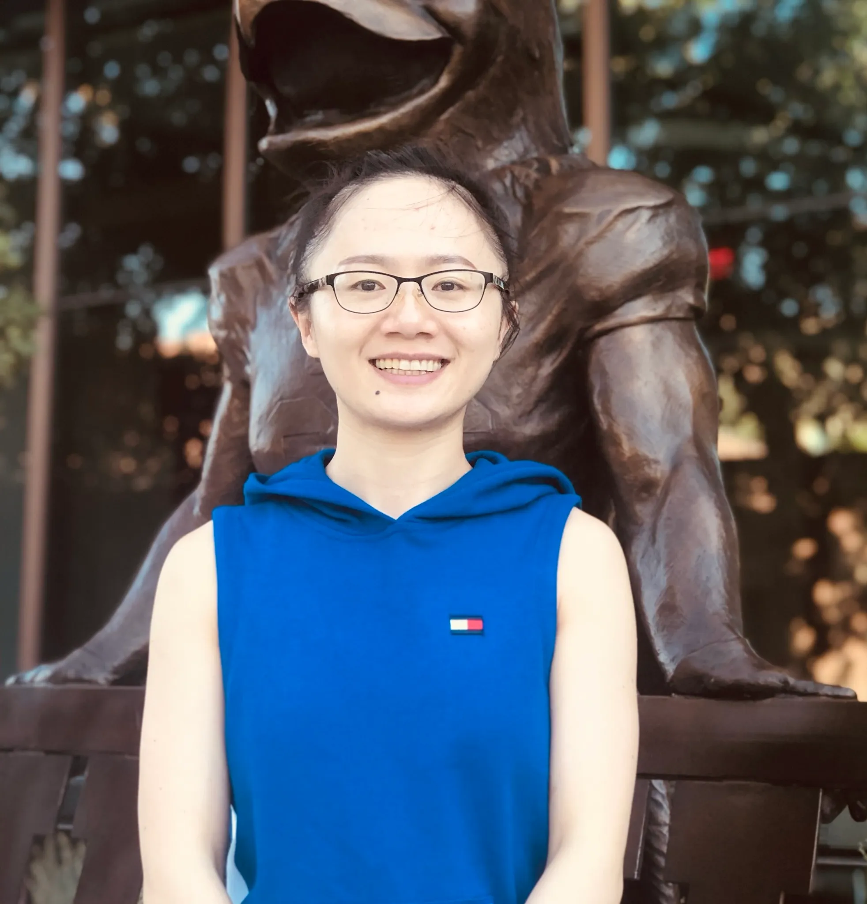
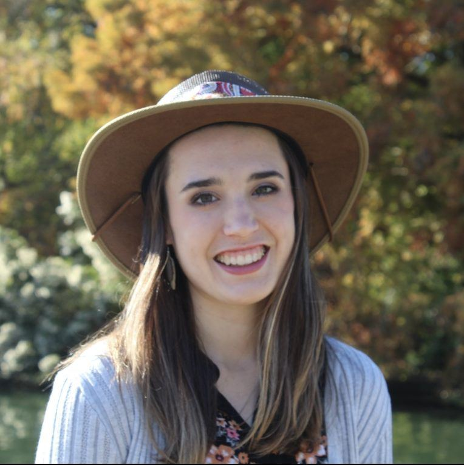
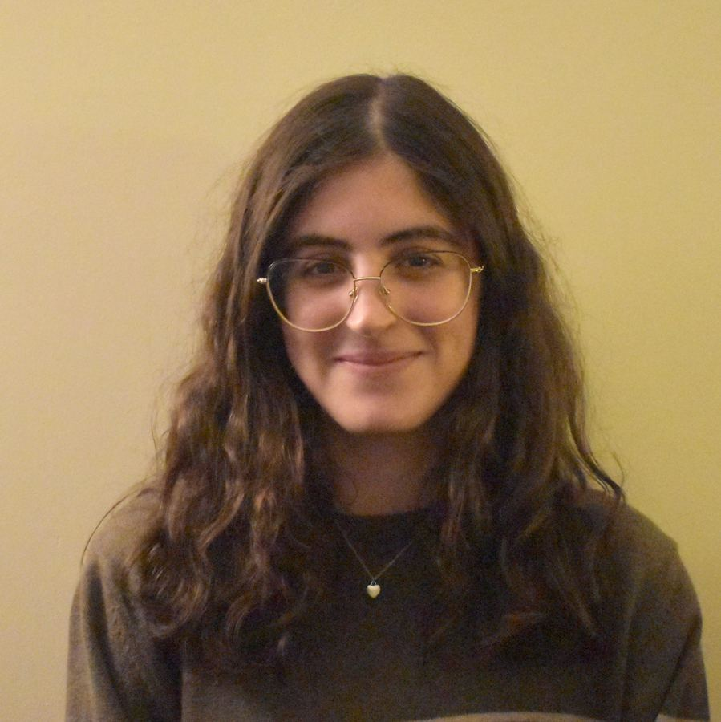
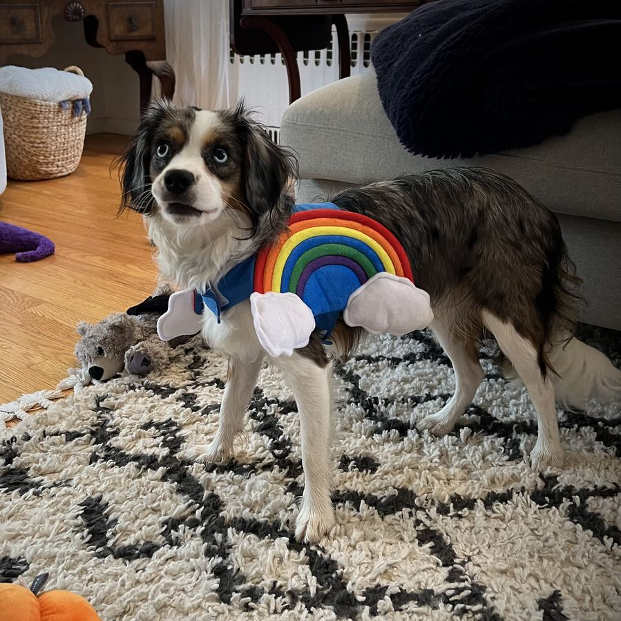
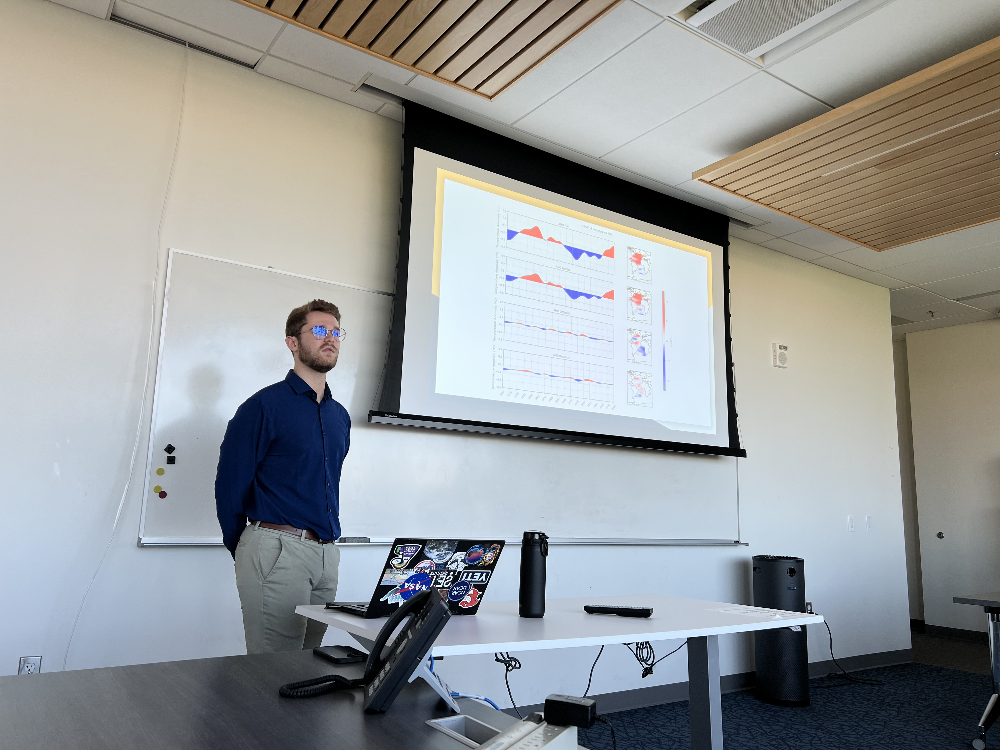

Current group members

Dr. Michael Diamond
Principal Investigator
Michael is an Assistant Professor in the Department of Earth, Ocean, and Atmospheric Science at Florida State University. His research focuses on how clouds respond to anthropogenic pollution and warming and the implications for Earth’s climate. Outside work, he enjoys photography, hiking, reading (often about history), travel, and hanging out with his wife and dog.

Dr. Xia Li
Research scientist
Xia is a Research Scientist in the Department of Earth, Ocean, and Atmospheric Science at Florida State University. Her research focuses on interactions among clouds, sea ice, and radiation in the polar regions, and on how these coupled small-scale processes shape polar weather and climate. Outside of work, she enjoys running, yoga, exploring new restaurants, staying connected with family overseas, and exploring new interests.
Dr. Cansu Düzgün
Postdoctoral scholar
Cansu got her Ph.D. in Meteorology from Florida State University. Her research focuses on deep convection, convective entrainment, and parameterized vertical transport in chemistry-coupled atmospheric models. Outside of work, she enjoys playing tennis.

Lili Boss
PhD candidate, Meteorology
Lili is a PhD candidate in Meteorology at Florida State University. Her research interests include solar climate intervention techniques and their potential environmental impacts. Outside work she enjoys Zumba, traveling, cooking, and going to the beach.
Mitchell (Mitch) Voelker
Master's student, Meteorology
Mitch is a master’s student in meteorology at Florida State University. His research focuses on simulating tropical cyclone development, with his master’s thesis specifically investigating how aerosols influence cloud-radiative feedback during tropical cyclone intensification. Outside of meteorology, he enjoys outdoor activities, like playing sports such as soccer and tennis. He also has hobbies of fishing, scuba diving, and hiking.

Elizabeth (Liz) O'Meara
Master's student, Meteorology
Liz is a master’s student studying Meteorology at Florida State University. Her research looks at solar radiation modification, specifically marine cloud brightening, and its implications on global climate dynamics. Outside of work she enjoys photography and playing music.
David Johnson
Postbaccalaureate researcher
David is a postbaccalaureate researcher who earned his B.S. in Meteorology from Florida State University and is pursuing an M.S. in Artificial Intelligence at the University of South Florida. His research examines how aerosols and cloud condensation nuclei influence tropical cyclone development using numerical modeling. His broader interests include tropical cyclone modeling, remote sensing, instrument calibration and applications of AI to atmospheric science. Outside work, he enjoys working out, pickleball, fishing, and watching baseball.

Dr. Prof. Violet Thursday
Honorary member
Expert in frisbee aerodynamics, lingual evapotranspiration, and all things outdoors.
Join the group
We are always looking for more curious and motivated graduate students to work with us. If you’re interested in joining the group, please reach out for more information and to share about your interest in our research and what kinds of projects you may be interested in pursuing.
Our group does not currently have any open postdoctoral positions. However, if you are interested in pursuing a postdoctoral opportunity with me via competitive fellowships like the NOAA Climate & Global Change Postdoctoral Program or NSF AGS Postdoctoral Fellowships, please be in touch with a proposed project idea.
Former members

Anthony (Tony) Freveletti
Meteorology M.S.
Tony defended his Master's work on aerosol forcing of Atlantic Multidecadal Variability, using rotated low-frequency component analysis.
Jaylynn (Jay) Brunelli
Meteorology B.S. with Honors in the Major
Jay is an FSU meteorology graduate and now a PhD student at Indiana University-Bloomington. Her work involves stratospheric aerosol injection, control theory, climate variability, and education. Outside of work she enjoys creating art, reading, and antiquing
Bryce Lovelace
Meteorology B.S.